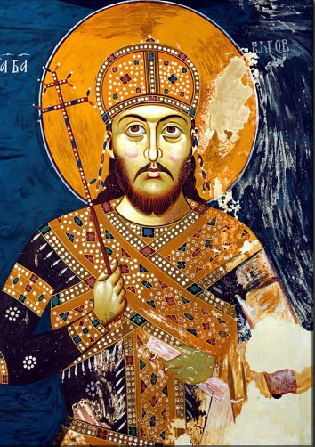

Цар Душан Силни
Фреска цара Душана, манастир Лесново
Увод
Цар Стефан Душан Немањић, познат као Душан Силни, био је најмоћнији српски владар и један од најзначајнијих личности средњовековне Европе. Рођен је око 1308. године као син краља Стефана Дечанског и краљице Теодоре. Од малена је показивао изузетне војне и дипломатске способности. Већ 1331. године, после сукоба са оцем, преузео је престо и крунисан је за краља у Скопљу.
Владaвина
Током своје владавине, Душан је водио бројне успешне војне походе. Освојио је значајне делове Византијског царства, укључујући Епир, Тесалију и велике делове Македоније и Тракије. Његова држава је постала највећа у историји средњовековне Србије. Крунисан је за цара Срба и Грка на Васкрс 16. априла 1346. године у Скопљу, уз подршку српског патријарха, бугарског патријарха и представника Свете Горе.

Мапа Душановог Царства
Душанов законик
Године 1349. у Скопљу је донет први део Душановог законика, а 1354. у Серу је додат други део. Законик је садржао преко 200 чланова и регулисао је све аспекте друштвеног, црквеног и правног живота. Био је један од најразвијенијих правних система у Европи тог доба. Душан је инсистирао на правди и реду, кажњавајући корупцију, лоповлук и издају најстрожим казнама.

Страница из Душановог Законика, 14. век
Задужбине
Цар Душан је био изузетан ктитор. Његова најпознатија задужбина је манастир Светих Архангела код Призрена, подигнут у близини старе царске престонице. Манастир је био задивљујући спој архитектуре и уметности, а Душан је у њему и сахрањен. Подржавао је и обнову и проширење манастира у Србији и Грчкој, укључујући и бројне светогорске светиње.

Манастир Светих Архангела, кањон реке Призренске Бистрице у Метохији
Хиландар и православље
Душан је био велики заштитник православља. Подржавао је монашки живот и проширио аутономију Српске цркве. Оснивањем Српског патријархата у Пећи, 1346. године, Српска архиепископија је уздигнута на ниво патријаршије. Душан је такође даривао манастир Хиландар и друге светогорске манастире земљом, златом и виноградима.
Душанов златник
За време његове владавине, Србија је ковала златнике и сребрњаке високог квалитета, по угледу на византијски новац. Душанов златник носио је његов лик са царском круном и крстом у руци. Новац је био доказ економске снаге и државне суверености, а користио се широм Балкана у трговини и дипломатији.
Наслеђе
Цар Душан је преминуо изненада 20. децембра 1355. године, током припрема за поход на Цариград. Сахрањен је у манастиру Светих Архангела. Наследио га је син Урош, познат као Урош Нејаки, који није имао снаге да одржи јединство царства. Душаново име и дело остали су дубоко укорењени у националну свест као симбол снаге, правде и духовне величине.

Српско царство 1360. године, у време цара Уроша, са територијама обласних господара.
Занимљивости о Цару Душану
- Цар Душан је имао војску од преко 80.000 људи, једну од највећих у тадашњој Европи.
- Планирао је да освојии Цариград и крунише се као цар Византије, али је изненада преминуо.
- Његово тело је 1927. године пренето из Призрена и данас почива у манастиру Светог Марка у Београду.
- Према народном предању, био је висок преко 2 метра, па је називан „Силни“ због физичке и политичке моћи.
- Душанов законик био је толико напредан да се користио као модел правде и у каснијим вековима.
- Цар Душан је носио титулу „Велики Краљ Срба и Грка“ и прогласио се царем 1346. године.
- Његов дворац у Скопљу био је један од најимпресивнијих средњовековних замкова на Балкану.
- Основао је бројне манастире и задужбине, од којих су неки и данас значајни споменици културе.
- За време његове владавине, српска држава је била највећа у својој историји, обухватајући делове данашње Србије, Македоније, Грчке и Албаније.
- Душанова смрт је изазвала пад српске моћи јер његов наследник није имао довољно снаге да одржи царство.
- Легенда каже да је Душан био толико моћан да је чак и небо „држао у својим рукама“.
- Његов законик је био написан на старосрпском језику и садржао је преко 200 чланова, регулишући све аспекте живота и права.
Последње ажурирање: јул 2025.